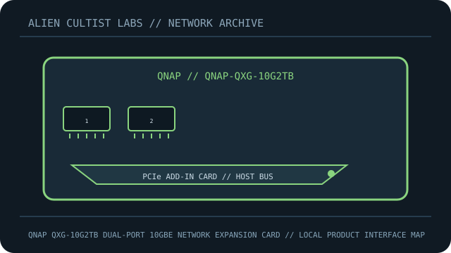

[ MODEL-SPECIFIC NETWORK HARDWARE ]
QNAP QXG-10G2TB Dual-Port 10GbE Network Expansion Card
PCIe add-in network adapter with two 10GBASE-T copper interfaces and NBASE-T fallback. This record is limited to the exact named model; revisions and regional SKUs may differ.

MODEL IDENTIFICATION: Match the complete model number and revision on the manufacturer label before applying specifications. Published link rates are nominal, not measured application throughput.
Published specifications and compatibility
| Exact product | QNAP QXG-10G2TB Dual-Port 10GbE Network Expansion Card |
|---|---|
| Archive subcategory | 10 Gigabit and server adapters |
| Physical ports | 2 × 10GBASE-T RJ-45; supports 10G/5G/2.5G/1G/100Mb/s link rates. |
| Host / chassis interface | PCI Express Gen 3 ×4 add-in card; low-profile and full-height bracket availability depends on package. |
| Standards / protocol | Ethernet over twisted-pair copper; controller uses PCIe host interface. |
| Rated link and switching rates | Up to 10Gb/s per port. Multi-gig rates require compatible peer and cable; PCIe lane width/host configuration can affect aggregate transfers. |
| Power and thermal notes | PCIe bus-powered; case airflow is important for a 10GbE card. Do not obstruct the heatsink. |
| Firmware / driver | Use QNAP’s model-specific driver/firmware and compatibility list; card and OS support vary by QTS/QuTS hero release. |
| Compatibility guidance | Check PCIe slot is electrically suitable for Gen3 ×4, operating-system/QNAP NAS support list and driver. Cat6A is recommended for 10GBASE-T at full channel reach; lower link rates negotiate with compatible cabling/peers. |
Model-specific deployment notes
QXG-10G2TB is the dual-RJ45 adapter; it is distinct from QNAP’s single-port QXG-10G1T and SFP+ QXG cards.
For a reproducible speed or interoperability test, record both link-partner models, cable/media, firmware, negotiated rate and test method. No benchmark is claimed in this archival record.
Manufacturer sources and documentation
- QNAP — official QNAP QXG-10G2TB Dual-Port 10GbE Network Expansion Card product specificationsManufacturer product page/specification reference for this model.
- QNAP — official support, manual or compatibility resourcesUse revision- and region-specific documentation for firmware, installation, media and compatibility decisions.
Source specifications describe rated capability; verify the label and current manufacturer documentation before purchase or deployment.